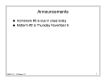
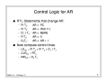
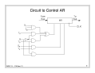
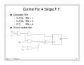
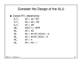
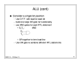
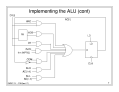
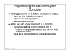

CMSC 311
Class 17
November 2, 1995 There are 9 slides in this class.









Click here to go back.
You can also download the PostScript file for these slides by clicking on one of the following:
gzipped (smallest)
compressed
Copyright 1995 Jeffrey K. Hollingsworth. All rights reserved.